Background
Let's take a close up look of the shadow from tutorial 47:
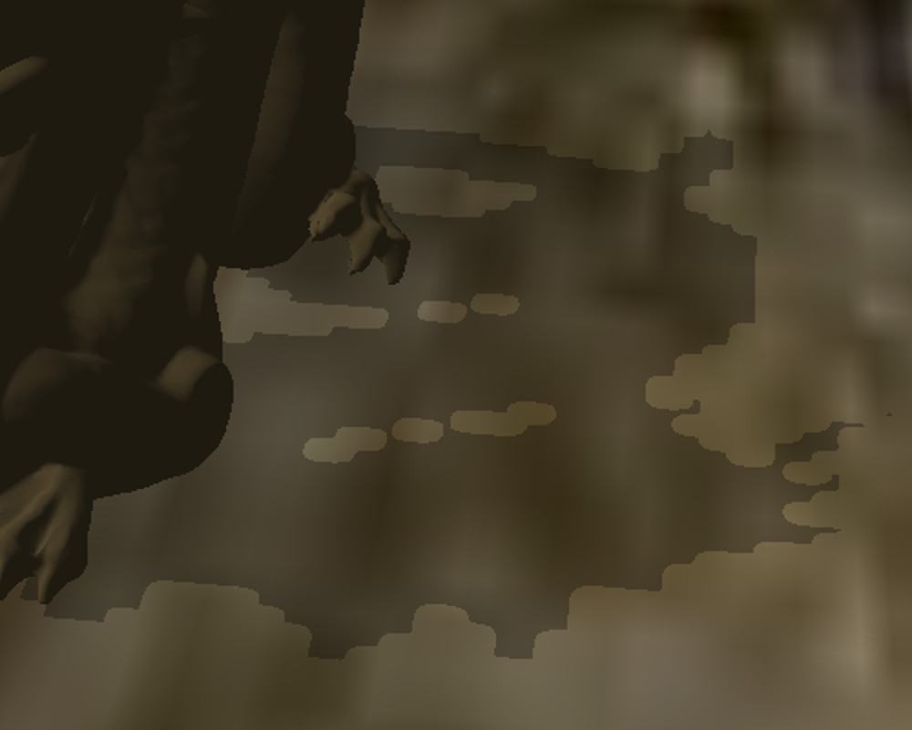As you can see, the shadow is not a very good one. It's too blocky. We've touched on the reason for that blockiness at the end of tutorial 47 and referred to it as Perspective Aliasing which means a large number of pixels in view space being mapped to the same pixel in the shadow map. This means that all these pixels will either be in shadow or in light, contributing to the sense of blockiness. In other words, since the resolution of the shadow map is not high enough it cannot cover the view space adequately. So one obvious way to deal with this is to increase the resolution of the shadow map but that will increase the memory footprint of our app so it may not be the best course of action.
Another way to deal with this problem is to notice that shadows closer to the camera a far more important in terms of quality than shadow of objects that are far away. Distant objects are smaller anyway and usually the eye focuses on what happens close by, leaving the rest as a "background". If we can find a way to use a dedicated shadow map for closer objects and a different shadow map for distant objects then the first shadow map will only need to cover the closer objects, thus decreasing the ratio that we discusses above. This, in a nutshell, is what Cascaded Shadow Mapping (a.k.a CSM) is all about. At the time of writing this tutorial CSM is considered one of the best ways to deal with Perpective Aliasing. Let's see how we can implement it.
From a high level view we are going to split the view frustum into several cascades (since it doesn't need to be just two as in the previous example). For the purpose of this tutorial we will use three cascades: near, middle and far. The algorithm itself is pretty generic so you can use more cascades if you feel like it. Every cascade will be rendered into its own private shadow map. The shadow algorithm itself will remain the same but when sampling the depth from the shadow map we will need to select the appropriate map based on the distance from the viewer. Let's take a look at a generic view frustum:
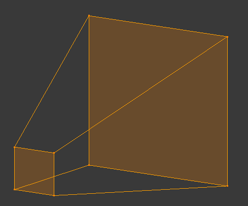As usual, we have a small near plane and a larger far plane. Now let's take a look at this fustum from above:
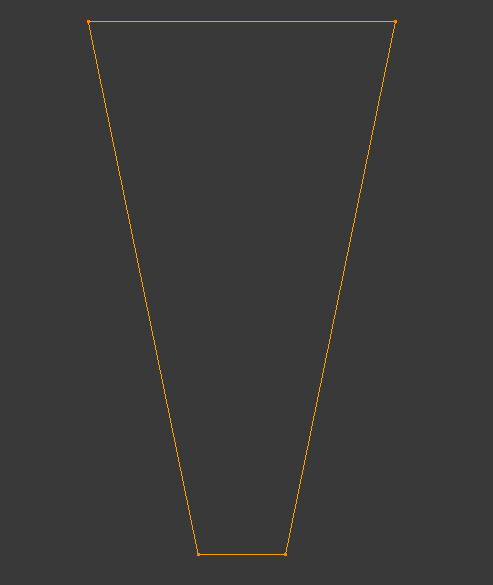The next step is to split the range from the near plane to the far plane into three. We will call this near, middle and far. In addition, let's add the light direction:
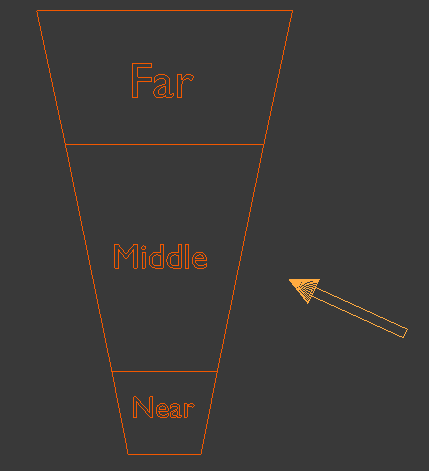So how are we going to render each cascade into its own private shadow map? Let's think about the shadow phase in the shadow mapping algorithm. We set up things to render the scene from the light point of view. This means creating a WVP matrix with the world transform of the object, the view transform based on the light and a projection matrix. Since this tutorial is based on tutorial 47 which dealt with shadows of directional lights the projection matrix will be orthographic. In general CSMs make more sense in outdoor scenes where the main light source is usually the sun so using a directional light here is natural. If you look at the desription of the WVP matrix above you will notice that the first two parts (world and view) are the same for all cascades. After all, the position of the object in the world and the orientation of the camera based on the light source are not related to the splitting of the frustum into cascades. What matters here is only the projection matrix because it defines the extent of the region which will eventually be rendered. And since orthographic projections are defined using a box we need to define three different boxes which will be translated into three different orthographic projection matrices. These projection matrices will be used to create the three WVP matrices to render each cascade into its own shadow map.
The most logical thing to do will be to make these boxes as small as posible in order to keep the ratio of view pixels to shadow map pixels as low as possible. This means creating a bounding box for each cascade which is oriented along the light direction vector. Let's create such a bounding box for the first cascade:
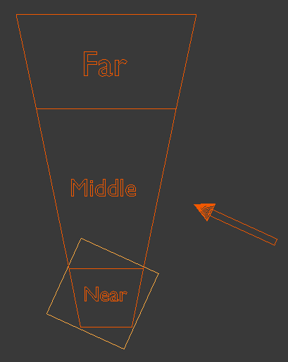Now let's create a bounding box for the second cascade:
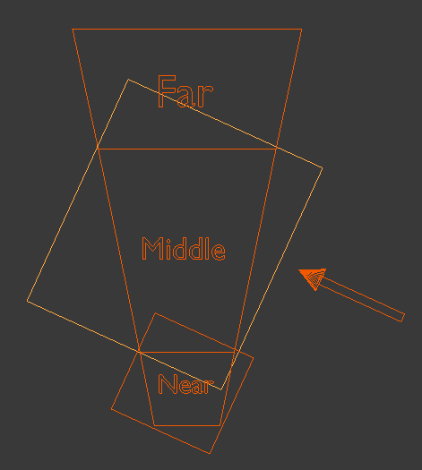And finally a bouding box for the last cascade:
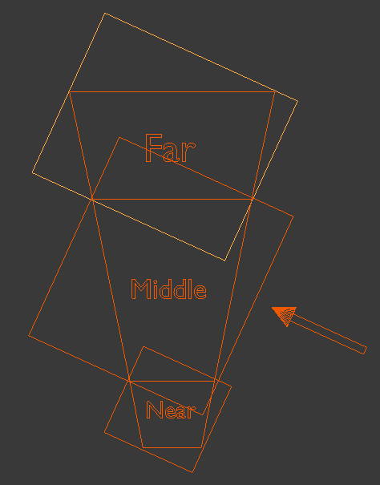As you can see, there is some overlap of the bounding boxes due to the orientationn of the light which means some pixels will be rendered into more than one shadow map. There is no problem with that as long as all the pixels of a single cascade are entirely inside a single shadow map. The selection of the shadow map to use in the shader for shadow calculations will be based on the distance of the pixel from the actual viewer.
Calculations of the bounding boxes that serve as the basis for the orthographic projection in the shadow phase is the most complicated part of the algorithm. These boxes must be described in light space because the projections come after world and view transforms (at which point the light "originates" from the origin and points along the positive Z axis). Since the boxes will be calculated as min/max values on all three axis they will be aligned on the light direction, which is what we need for projection. To calculate the bounding box we need to know how each cascade looks like in light space. To do that we need to follow these steps:
- Calculate the eight corners of each cascade in view space. This is easy and requires simple trigonometry:
- Now we need to transform the cascade coordinates from view space back to world space. Let's say that the viewer is oriented such that in world space the frustum looks like that (the red arrow is the light direction but ignore it for now):
- With the frustum coordinates in world space we can now transform them to light space as any other object. Remember that the light space is exactly like view space but instead of the camera we use the light source. Since we are dealing with a directional light that has no origin we just need to rotate the world so that the light direction becomes aligned with the positive Z axis. The origin of light can simply be the origin of the light space coordinate system (which means we don't need any translation). If we do that using the previous diagram (with the red arrow being the light direction) the cascade frustum in light space should look like:
- With the cascade coordinates finally in light space we just need to generate a bounding box for it by taking the min/max values of the X/Y/Z components of the eight coordinates. This bounding box provides the values for the orthographic projection for rendering this cascade into its shadow map. By generating an orthographic projection for each cascade separately we can now render each cascade into different shadow map. During the light phase we will calculate the shadow factor by selecting a shadow map based on the distance from the viewer.
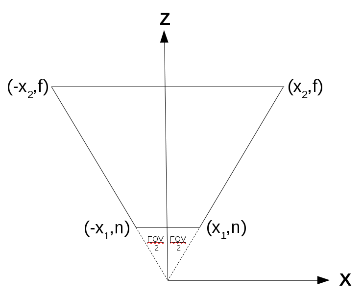
The above represents an arbitrary cascade (since each cascade on its own is basically a frustum and shares the same field-of-view angle with the other cascades). We need to calculate X1 and X2:
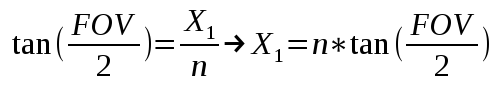 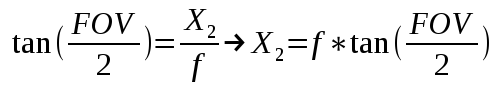This gives us the X and Z components of the eight coordinates of the cascade in view space. Using similar math with the vertical field-of-view we can get the Y component and finalize the coordinates.
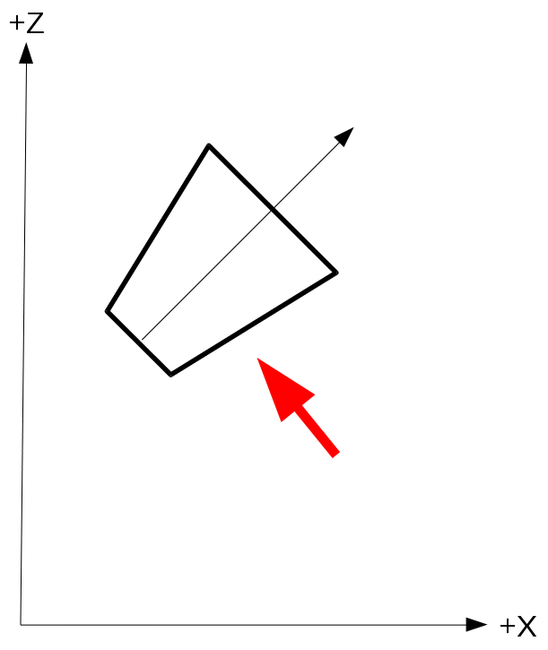
In order to transform from world space to view space we multiply the world position vector by the view matrix (which is based on the camera location and rotation). This means that if we already have the coordinates of the cascade in view space we must multiply them by the inverse of the view matrix in order to transform them to world space:
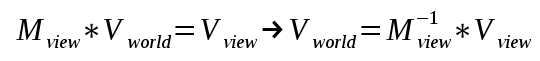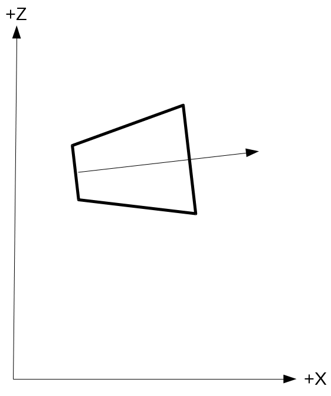